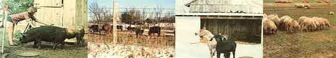

Veterinarian Randy Kidd reminds us that the best "cure" for livestock (and pet!) diseases is a sound prevention program.
If you live-or plan to live-in the country, you probably intend to raise some food- or fiber-yielding animals. Now some homesteaders are content with a few egg-laying chickens and a dairy goat . . . while others hope to start a full-fledged livestock operation. But whether your goal is a few gallons of buttermilk or a whole herd of beefalo, you'll have to be absolutely dedicated to keeping your critters healthy.
There is, of course, a practical monetary reason for such a conscientious disease-prevention effort: Animals that are in less than peak condition simply don't produce their maximum in meat, wool, eggs, or milk. And unless you're a lot richer than I am, you plain can't afford to be constantly funneling feed into such "uneconomical" critters.
In addition, there's an ethical reason for doing your best to keep your animals perfectly hale and hearty. Every livestock or pet owner is a guardian of his or her beasts and fowl, and therefore is morally responsible for giving the animals the very best of care during their lifetimes.
Fortunately, safeguarding the health of your livestock is by no means an impossible or even an overly time-consuming task. On the contrary, if you take the time to learn-and consistently follow-a few basic guidelines for animal husbandry, your critters will thrive like shoots in springtime. These "rules of the animal health road" (which are guaranteed to help keep any cow, cur, goat, or guinea absolutely fit) are called: THE TEN COMMANDMENTS FOR HEALTHY LIVESTOCK.
I. Recognize your market. Before you begin to "stock up" on farm animals, take a good hard look at who will be eating or using their meat or produce. A realistic appraisal will show that-at least in the beginning-the main market for such products will be your own family. It's often difficult to try to turn your critters into moneymakers . . . because the minute you put up a FOR SALE sign, you're competing with all the food conglomerates and "plastic" food producers. And-although you know that homegrown "vittles" are tastier and more wholesome than the mass-raised, chemical-injected variety-quality eats are also more expensive, in most cases, than are store-bought foods. Unfortunately, as we all know, the average food buyer is-shortsightedly-more cost- than health-conscious.
So don't raise a critter unless you want its products! If your family treats goat milk like some foul-tasting medicine, don't own half a dozen nannies that each give a gallon of milk a day . . . and devour your grain supplies. If you can't see yourself ever butchering any cute-looking rabbits, don't keep a hutch full of the rapidly multiplying mammals.
What does all this advice have to do with animal health? Simply this: Most any critter needs a little love and affection in order to thrive and produce well. If you don't really want the foodstuff you're working-and paying-to raise, you may well become tremendously unhappy with (and therefore less careful of) your livestock. I've seen folks who almost hate to wake up in the morning . . . because they know they'll find that their attention-demanding homestead animals are still around. So do yourself-and the beasts and birds- a favor. Don't raise what you won't use.
II. Know what a normal animal looks and feels like . Once you've decided what kind of livestock you'd like to raise, you'll need to be sure you're able to readily recognize healthy specimens of those breeds. Of course, no one can spot an able-bodied critter just by looking over a fence at it. No sir, your hands will have to know how a normal animal feels just as your eyes will need to recognize how a healthy one looks.
Let's take an example: Suppose you're shopping for a nanny goat, and the particular creature you're examining has rump bones that poke out against her fur . . . a very wide chest with a "barrel" belly . . . and a strikingly large, broad udder that's equipped with hand-sized teats. If you don't know goats, this beast may sound a bit like a malformed monster. But such features exemplify "dairy character".
The knowledgeable "shopper", on the other hand, will look even further and perhaps notice-for example-that the critter's coat is awfully rough for the middle of summer (a sign that it may be undernourished or sick with parasites). He or she will also be sure to bend down beside the goat and rub its skin-firmly but gently-all over: If there aren't any unusual lumps, ol' Nan probably doesn't have abscesses. But if the animal fidgets during such a "checkup", the goat-wise buyer will suspect she's hard to milk. Of course, an "in the know" farmer would never buy a goat that he or she hasn't personally milked . . . and would likely discover that our "sample" nanny reacts to the procedure by kicking and jerking unmanageably.
Naturally, you should know all such "clues" by heart, and be able to reject the described goat on the spot-without even investigating such further points as her stool, teeth, or suspicious cough-and look somewhere else for your homestead milk animal. And goats aren't the only critters that need a complete "physical". Every type of animal should be examined just as thoroughly . . . and each species has its own peculiarities. Pigs, for example, have such an unusual gait that - unless you understand their normal way of walking-you might not recognize when one is lame . . . while rabbits and sheep that look loaded with muscle may turn out-upon prodding-merely to be heavily furred or wooled. So don't go livestock shopping until you've seen (and felt) enough critters to know what's normal and what's not. (This knowledge will also come in handy while you're raising the animals . . . because if you don't recognize a healthy bird or beast, you sure as heck won't spot a sick one! )
III. Buy the best animals. If you expect top production from your livestock (and you shouldn't aim for any less), you must buy the best animals available. Please note that I'm not saying "the best you can afford" . . . because the worst livestock decision you can make is to purchase a poor quality critter. Such a financial "deal" will end up-in the long run-costing you a lot of money. If you can't afford superior animals, don't purchase any beasts at all.
Because you should only "buy the best", the ability to distinguish between high-quality and "average" critters is as important a skill as is recognizing normal-as opposed to inferior-specimens. And the quickest way to learn "advanced animal appreciation" is to spend a few days studying the prize entries at the county fair. Be sure to watch the livestock judging . . . and listen closely when the officials give their reasons for selecting one beast over another. Before long, you'll understand the standards of excellence for each species and pick the same top ribbon winners that the experienced judges choose.
Once you do know what to look for in your herd and flock "starters" and begin shopping around, promise yourself that you won't buy any animals until you've seen at least a half dozen of the finest specimens in your area . . . and then purchase the very best of the bunch for your homestead. Don't be like the goat shoppers who pull up to my place-with a pickup truck full of children-so eager to get themselves a nanny (or maybe even two or three if the young'uns whine enough) that they'll buy an animal regardless of the critter's quality. Do your looking . . . and then do your buying.
IV. Cull the worst animals. If one side of the livestock-choosing coin is to purchase the best specimens, the other side -inevitably-is to remove the worst from your pens and pastures. The chicken that won't lay eggs, the rabbit that bears four or five bunnies per litter instead of six to eight, the goat that dries up after four months of lactation (and doesn't get bred every year)-in fact, any animals that aren't superior examples of their breed-should be culled. In most cases, the easiest way to get rid of unwanted critters is simply to add them to your dinner menus.
Culling improves the quality of your present-and future-stock, helps weed out inherited tendencies toward disease, and makes it possible for you to keep your feed bill at a reasonable level. Some folks consider this "survival of the fittest" idea harsh . . . but it's the ultimate test of whether you are in the livestock-or the pet-raising business. Of course, there's nothing wrong with keeping animals as companions . . . but that sort of operation isn't always compatible with maintaining productive farm stock.
V. Be aware of your animals' cycles. Every beast or bird is controlled by its own natural life patterns. And-as a livestock producer-you need to understand these predictable cycles.
For instance, you'll have to know when your female critter will come into heat, how long that breeding period will last, and when-during the cycle-the animal should be bred.
Some other "facts of life" that a successful stockowner will learn are these: How long-after breeding-will the young'uns be born? (You need to be prepared for those babies!) And at what age should the little ones be weaned? When will the maturing critters begin to produce milk, eggs, wool, or meat? How much "harvest" can be expected . . . and how long will the animal in question continue to produce?
You see, all of these considerations can be related to natural cycles. You need to be familiar with the life patterns for every type of animal you raise in order to know what to expect . . . and when to expect it.
VI. Keep meaningful records. Livestock cycles will tell you how your animals are supposed to grow and produce. But you still won't know which critters really are meeting those expectations (and consequently which uneconomical beasts to cull) . . . unless you keep accurate records.
For meat-producing stock, you'll have to tally dates and weights at birth, weaning, and butchering. Breeding records should include sires, expected and actual birth dates, and litter size and weights. And, of course, you'll need to keep tabs on all of your animals' milk, wool, or egg yields. (Remember that some critters' productivity can only be assessed by group output . . . it's often pretty difficult to tell just which chicken laid what egg!) You can then compare these totals against your feed bills-and other expenses-and know whether or not your livestock enterprise is profitable.
Not only should you keep records on your own animals . . . you should also only buy critters with accurate production sheets. When a farmer comes out with that old nanny seller's saw, "Oh, this goat gives about a gallon of milk a day" . . . he may in fact mean, "The least she gives is a gallon a day throughout a 10-to 11-month lactation period." On the other hand, the animal dealer might just as easily be saying, "On her best milking day last year, ol' Nan gave nearly three quarts . . . and she dried up after about three months."
Folks here in Kansas emphasize the importance of records in their own way: "Without good tab sheets, you got no idea where you've been to get where you are . . . which means you are lost . . . which means moving in any direction will more than likely get you further lost." Don't get "lost" in your livestock-raising enterprise . . . always keep accurate, complete, and meaningful records.
VII. Build your animal housing well. Once you have the best possible livestock and record system, your main responsibility will be providing for your animals' care . . . and shelter is one of any creature's most basic needs. Many people tend to think of animal housing as more of a cold- than a hot-weather necessity, but the reverse is actually true. Beasts and fowl can maintain their normal body temperatures even in a snowy winter . . . if they're kept dry and out of the wind. After all, that's what the critters' wool, fur, or feathers are for. (You can help stoke the animals' heat-making digestive furnaces, too-during those extracrisp cold snaps-by giving them some additional food.)
On the other hand, hot weather can really sap a critter's vitality and health. So all of your livestock will need some place-like a big shade tree or a homemade shelter-to get away from searing summer sun.
And whether your "critter cottages" are designed for protection from heat or cold (or both), the homes must be adequately ventilated . . . because too much shelter is worse than too little. The humidity that can build up-in a confined area-from a farm animal's breathing, urine, manure, and body heat will make an otherwise healthy inhabitant more susceptible to pneumonia than if that same beast had endured the weather outdoors. On my farm, we dealt with that problem by making all our solid, leakproof animal shelters completely open on the south side (away from the prevailing winds). If your barnyard structures don't have such exposed ends, be sure to provide the enclosures with adequate ventilation holes.
Your farmstead fauna will also need a protective fence around their yard or pasture . . . both to keep harmful varmints-like our local coyotes-out and to keep your own livestock in. And believe me . . . constructing a barricade strong enough to contain those furred and feath ered farmhands can be quite a hassle. Sheep and goats will poke their heads into a small fence gap often enough to force open a fullsized exit hole . .. horses and cows walk through walls you'd think would stop a bulldozer . . . while birds cart fly over, hogs root under, and rabbits gnaw through just about every imaginable man-made barrier. All in all, animals seem to act as if folks build fences solely to provide "escape practice". So always make your enclosures as sturdy as possible.
VIII. Feed the critters correctly. Although animals need the same kinds of food that we humans do-protein, carbohydrates, fat, vitamins, minerals, and water-each critter must have a specific diet balanced to its own requirements. And since scientists have figured out the exact proportions of feed mixture necessary to help each animal do exactly what it's intended to do (for instance, young-chick chow contains 20-25% protein . . . while laying-hen food has only 16-18%n protein but higher vitamin and mineral quantities), the easiest solution to your feeding problems is prepackaged commercial food made specifically for your livestock's needs.
Most of us, however, want to use up some of the produce and leftovers we have around-and save a little food-bill money besides-by feeding farm animals on farm food. Well, you darn near have to have a graduate degree in nutrition to figure out your own homegrown, full-time livestock feed . . . but you can effectively "stretch" those commercial products with your own growing''.
However, any supplemental feeding must be based upon a knowledge of your barnyard denizens' eating habits. Of course, such understanding will include knowing the types of things the beasts like to ingest (goats enjoy the occasional fresh tree limb, for example). But you must also know how your critters eat. You can't-for instance-safely give the same small bones to dogs (aggressive gulpers) that you can feed to hogs (fastidious chewers).
Beginning homesteaders often-with the best intentions-make one of the worst feeding mistakes of all: They overstuff their livestock. Fat animals won't breed, often give little milk, and supply poor-tasting (and feed-wasting) meat. All in all, such "tubbies" are just about useless. So if you've got an animal that's overweight, cut back on its grub and keep the "obeastie" on a diet until it returns to normal weight . . . or butcher the animal before it gets any fatter.
Finally, don't neglect the most important requirement of all animals: fresh water. Your livestock must have a continuous supply of the life-giving liquid. So-unless the critters have access to a clean, flowing stream-you should replenish their water at least twice a day.
IX. Coddle the "youngsters". Raising healthy animal babies will keep you in the livestock business longer than any other single thing you can do. So go ahead and SPOIL your "litter critters". You'll be rewarded for any amount of extra effort you put into keeping those small fry healthy . . . with more vital-and more productive-adults.
To take care of the offspring, you have to prepare for their birth well in advance. Circle the anticipated day on your calendar, gather up everything you'll need (from heat lamps to iodine), and check your expectant mother several times each day.
When the "little strangers" do arrive, the care you give them will-of course-depend on what type of young'uns they are . . . so be sure that you know the babies' specific needs. All newborns must be dried off (momma may do this with her tongue) and be provided with a clean, draft-free bed, but some of them have a few special requirements . . . like 80-90°F temperatures for the first few days. And by the way, be sure all your mammal babies get that first drink of colostrum (antibody-laden milk) straight from their mothers.
Take care of your young critters, and they'll grow up to take care of you.
X. Help your animals prevent their own disease. If you follow the first nine animal-care commandments, you'll already be doing a great deal to keep your livestock healthy. These last few tips will help birds and beasts avoid catching their own species-specific "bug and worm" diseases.
[1] Make sure that every part of your animals' environment is scrupulously clean. I emphasized the importance of keeping livestock away from their own manure in my last article ("How to Deal With Internal Parasites, Part II" in MOTHER NO. 57, pages 56-58), so I'll simply say here that if cleanliness is next to godliness, dirtiness is next to disease.
[2] Don't bring illness onto your homestead. Buy animals that are not sick . . . and quarantine them for a few weeks to be certain the newcomers aren't carrying some unnoticed disease. Also, be sure to wear boots when you visit other folks' livestock areas . . . and disinfect that footwear afterward.
[3] Remember that parasites and "regional" bugs are your animal's biggest problems, so set up good worm control and vaccination programs with your local veterinarian.
If you look over these TEN COMMANDMENTS FOR HEALTHY LIVESTOCK, you'll realize they don't involve a lot of grueling extra work. Nope, you can keep all your critters fit with a minimum of fuss or muss. What preventive animal health does involve, though, is using your head. You've heard the old saying: "An ounce of prevention is worth a pound of cure." Well, I'm going to add to that all-too-true proverb by rewriting it this way: When it comes to keeping livestock well and productive, an ounce of prevention comes from using that pound of gray matter between your ears!
EDITOR'S NOTE: More of Randy Kidd's livestock and pet care advice can be found in MOTHER NOS. 52, 53, 54, 55, 56, and 57. These back issues of this publication are available-for $3.00 apiece, plus $1.00 per order for shipping and handling-from THE Mother Earth News(restricted), P.O. Box 70, Hendersonville, North Carolina 28739.
|
CLOCKWISE FROM ABOVE: The best way to learn to recognize top-quality animals (the only kind you should buy for your own farm or homestead) is to study the prize-winning contestants at livestock shows .... If you know your barnyard beasts, one glance at this photo will show you that this entire flock of sheep has been stricken with abscesses! The ailing woolmakers all walk with their heads down! . . . This open-ended goat shelter gives the animals plenty of protection from rain and wind (the livestock house faces away from the prevailing breezes) while providing enough ventilation to keep the quarters well-aired and healthful! . . . Fences keep your critters in-and unwanted animals out-but it takes sturdy construction and yearly upkeep to make sure those livestock barricades stay intact .... A good animal steward takes care of his or her livestock's needs and makes sure the critters receive adequate love and attention. |
 |
|